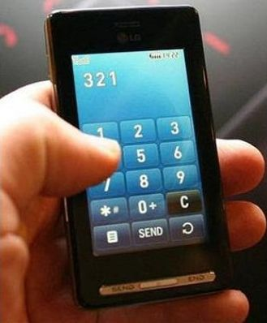

1.7.6. Сенсорные экраны
Се́нсорный экран — устройство ввода и вывода информации, представляющее собой экран, реагирующий на прикосновения к нему. При поднесении пальца, указки, электронного пера и т.п. к выбранному изображению на поверхности дисплея, специальный контроллер считывает координаты точки прикосновения, и отправляет эти сведения на последующую обработку. Отслеживание места касания может быть реализовано согласно ёмкостной, резистивной, инфракрасной, тензометрической, на ПАВ, или электромагнитной технологиям. Сокращение «ПАВ» означает поверхностные акустические волны.
Сенсорный экран, выполненный по ёмкостной технологии, состоит из стеклянной пластины, на которую сзади нанесена прямоугольная сетка из прозрачных токопроводящих электродов, к краям которой подсоединяют генераторы переменных напряжений. При прикосновении к определённой точке сенсорного экрана в её окрестности возрастает ёмкость, увеличиваются переменные токи утечки, сила которых пропорциональна расстояниям до краёв пластин. Измеряя силы токов, вычисляют положение точки прикосновения к сенсорному экрану. Достоинства: малое время отклика, составляющее обычно от 3 мс до 20 мс, число нажатий до выхода экрана из строя может превышать сотни миллионов, высокая механическая прочность. Недостаток: не реагирует на прикосновение непроводящим ток предметом.
Сенсорный экран, выполненный по резистивной технологии, имеет жёсткую пластину, покрытую резистивным веществом, передкоторой располагают пластиковую мембрану, также покрытую ре-зистивным веществом. Материалом пластины обычно выступает стекло или полиэстер. Между пластиной и мембраной размещают изолирующие гранулы. К краям пластины и мембраны подключают внешние источники питания. При нажатии на резистивный экран мембрана продавливает слой изоляции, что приводит к её соприкосновению с пластиной. Токи, потребляемые от генераторов, будут пропорциональны расстояниям до точки прикосновения. Резистив-ныс покрытия и мембраны и пластины необходимы для отслеживания положения точки и по горизонтали, и по вертикали. Достоинства: низкая стоимость, чувствительность экрана к прикосновениям и проводящим, и диэлектрическим предметом. Недостатки: число нажатий до разрушения обычно на порядок меньше, чем у сенсорных экранов по ёмкостной технологии, а также ниже механическая прочность.
Рис.7.6. Принцип действия резистивного сенсорного экрана
- Стеклянная панель
- Резистивное покрытие
- Микроизоляторы
- Плёнка с проводящим покрытием
В сенсорном экране, выполненном по инфракрасной технологии, сетка инфракрасных волн образована инфракрасными светодиода-ми, размещёнными с одной стороны экрана по вертикали и горизонтали, и принимаемая фототранзисторами, установленными с другой стороны экрана. Если любой непрозрачный для инфракрасных волн предмет будет поднесён достаточно близко к сенсорному экрану, и поглотит или отразит падающее на фототранзистор излучение, то система отреагирует и определит координаты точки прикосновения. Достоинства: чувствительность экрана к прикосновениям любым предметом, задерживающим инфракрасное излучение. Недостатки технологии: большое время отклика, высокая стоимость, возможность использования лишь для плоских дисплеев, низкая разрешающая способность.
Сенсорный экран, выполненный по технологии ПАВ, обладает стеклянной плитой, по которой пропускают от источников к приёмникам колебаний поверхностно-акустические волны с частотой в несколько мегагерц. Источники и приёмники ПАВ - это пьезоэлектрическими преобразователями, выполняемые обычно в виде плёнок сульфида кадмия, установленные по краям экрана. Излучённые поверхностно-акустические волны достигают противоположной стороны экрана и отражаются обратно, где попадают на датчики. Если осуществить прикосновение к экрану, то поверхностно-акустические волны будут частично поглощены и преломлены, что зарегистрируют датчики. Полученную информацию сравнивают с заранее записанной информацией о всевозможных распространениях волн и на этой основе формируют сигнал не только о положении точки касания в пространстве, но и силы, с которой оно было произведено.
Достоинства: наработка на отказ сенсорного экрана на основе ПАВ обычно в несколько раз превышает наработку на отказ экрана по резистивной технологии.
Недостатки: высокая стоимость, низкая разрешающая способность, ограниченная стоимостью изделия, чувствительность к механическим колебаниям, получение ошибочной информации при воздействии вибраций.